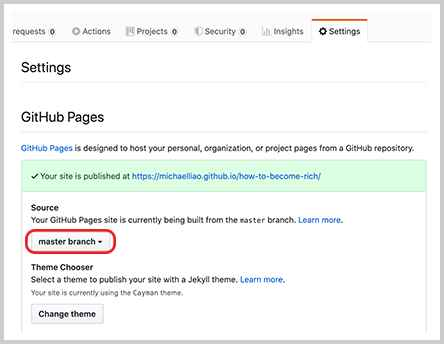
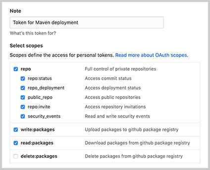
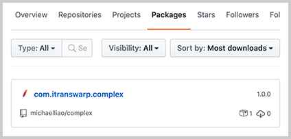

${user_name} @ ${created_at} ${delete_action}
${content}
${comment_replies}
${comment_action}
${comment_reply_form}
../git/BEFORE.md
当我们使用commons-logging这些第三方开源库的时候，我们实际上是通过Maven自动下载它的jar包，并根据其pom.xml解析依赖，自动把相关依赖包都下载后加入到classpath。
那么问题来了：当我们自己写了一个牛逼的开源库时，非常希望别人也能使用，总不能直接放个jar包的链接让别人下载吧？
如果我们把自己的开源库放到Maven的repo中，那么，别人只需按标准引用groupId:artifactId:version，即可自动下载jar包以及相关依赖。因此，本节我们介绍如何发布一个库到Maven的repo中。
把自己的库发布到Maven的repo中有好几种方法，我们介绍3种最常用的方法。
如果我们观察一个中央仓库的Artifact结构，例如Commons Math，它的groupId是org.apache.commons，artifactId是commons-math3，以版本3.6.1为例，发布在中央仓库的文件夹路径就是https://repo1.maven.org/maven2/org/apache/commons/commons-math3/3.6.1/，在此文件夹下，commons-math3-3.6.1.jar就是发布的jar包，commons-math3-3.6.1.pom就是它的pom.xml描述文件，commons-math3-3.6.1-sources.jar是源代码，commons-math3-3.6.1-javadoc.jar是文档。其它以.asc、.md5、.sha1结尾的文件分别是GPG签名、MD5摘要和SHA-1摘要。
我们只要按照这种目录结构组织文件，它就是一个有效的Maven仓库。
我们以广受好评的开源项目how-to-become-rich为例，先创建Maven工程目录结构如下：
how-to-become-rich
├── maven-repo <-- Maven本地文件仓库
├── pom.xml <-- 项目文件
├── src
│ ├── main
│ │ ├── java <-- 源码目录
│ │ └── resources <-- 资源目录
│ └── test
│ ├── java <-- 测试源码目录
│ └── resources <-- 测试资源目录
└── target <-- 编译输出目录
在pom.xml中添加如下内容：
<project ...>
...
<distributionManagement>
<repository>
<id>local-repo-release</id>
<name>GitHub Release</name>
<url>file://${project.basedir}/maven-repo</url>
</repository>
</distributionManagement>
<build>
<plugins>
<plugin>
<artifactId>maven-source-plugin</artifactId>
<executions>
<execution>
<id>attach-sources</id>
<phase>package</phase>
<goals>
<goal>jar-no-fork</goal>
</goals>
</execution>
</executions>
</plugin>
<plugin>
<artifactId>maven-javadoc-plugin</artifactId>
<executions>
<execution>
<id>attach-javadocs</id>
<phase>package</phase>
<goals>
<goal>jar</goal>
</goals>
</execution>
</executions>
</plugin>
</plugins>
</build>
</project>
注意到<distributionManagement>，它指示了发布的软件包的位置，这里的<url>是项目根目录下的maven-repo目录，在<build>中定义的两个插件maven-source-plugin和maven-javadoc-plugin分别用来创建源码和javadoc，如果不想发布源码，可以把对应的插件去掉。
我们直接在项目根目录下运行Maven命令mvn clean package deploy，如果一切顺利，我们就可以在maven-repo目录下找到部署后的所有文件如下：
最后一步，是把这个工程推到GitHub上，并选择Settings-GitHub Pages，选择master branch启用Pages服务：

这样，把全部内容推送至GitHub后，即可作为静态网站访问Maven的repo，它的地址是https://michaelliao.github.io/how-to-become-rich/maven-repo/。版本1.0.0对应的jar包地址是：
https://michaelliao.github.io/how-to-become-rich/maven-repo/com/itranswarp/rich/how-to-become-rich/1.0.0/how-to-become-rich-1.0.0.jar
现在，如果其他人希望引用这个Maven包，我们可以告知如下依赖即可：
<dependency>
<groupId>com.itranswarp.rich</groupId>
<artifactId>how-to-become-rich</artifactId>
<version>1.0.0</version>
</dependency>
但是，除了正常导入依赖外，对方还需要再添加一个<repository>的声明，即使用方完整的pom.xml如下：
<project xmlns="http://maven.apache.org/POM/4.0.0"
xmlns:xsi="http://www.w3.org/2001/XMLSchema-instance"
xsi:schemaLocation="http://maven.apache.org/POM/4.0.0 http://maven.apache.org/xsd/maven-4.0.0.xsd">
<modelVersion>4.0.0</modelVersion>
<groupId>example</groupId>
<artifactId>how-to-become-rich-usage</artifactId>
<version>1.0-SNAPSHOT</version>
<packaging>jar</packaging>
<properties>
<maven.compiler.source>11</maven.compiler.source>
<maven.compiler.target>11</maven.compiler.target>
<java.version>11</java.version>
</properties>
<repositories>
<repository>
<id>github-rich-repo</id>
<name>The Maven Repository on Github</name>
<url>https://michaelliao.github.io/how-to-become-rich/maven-repo/</url>
</repository>
</repositories>
<dependencies>
<dependency>
<groupId>com.itranswarp.rich</groupId>
<artifactId>how-to-become-rich</artifactId>
<version>1.0.0</version>
</dependency>
</dependencies>
</project>
在<repository>中，我们必须声明发布的Maven的repo地址，其中<id>和<name>可以任意填写，<url>填入GitHub Pages提供的地址+/maven-repo/后缀。现在，即可正常引用这个库并编写代码如下：
Millionaire millionaire = new Millionaire();
System.out.println(millionaire.howToBecomeRich());
有的童鞋会问，为什么使用commons-logging等第三方库时，并不需要声明repo地址？这是因为这些库都是发布到Maven中央仓库的，发布到中央仓库后，不需要告诉Maven仓库地址，因为它知道中央仓库的地址默认是https://repo1.maven.org/maven2/，也可以通过~/.m2/settings.xml指定一个代理仓库地址以替代中央仓库来提高速度（参考依赖管理的Maven镜像）。
因为GitHub Pages并不会把我们发布的Maven包同步到中央仓库，所以使用方必须手动添加一个我们提供的仓库地址。
此外，通过GitHub Pages发布Maven repo时需要注意一点，即不要改动已发布的版本。因为Maven的仓库是不允许修改任何版本的，对一个库进行修改的唯一方法是发布一个新版本。但是通过静态文件的方式发布repo，实际上我们是可以修改jar文件的，但最好遵守规范，不要修改已发布版本。
有的童鞋会问，能不能把自己的开源库发布到Maven的中央仓库，这样用户就不需要声明repo地址，可以直接引用，显得更专业。
当然可以，但我们不能直接发布到Maven中央仓库，而是通过曲线救国的方式，发布到central.sonatype.org，它会定期自动同步到Maven的中央仓库。Nexus是一个支持Maven仓库的软件，由Sonatype开发，有免费版和专业版两个版本，很多大公司内部都使用Nexus作为自己的私有Maven仓库，而这个central.sonatype.org相当于面向开源的一个Nexus公共服务。
所以，第一步是在central.sonatype.org上注册一个账号，如果注册顺利并审核通过，会得到一个登录账号，然后，通过这个页面一步一步操作就可以成功地将自己的Artifact发布到Nexus上，再耐心等待几个小时后，你的Artifact就会出现在Maven的中央仓库中。
这里简单提一下发布重点与难点：
~/.m2/settings.xml中配置好登录用户名和口令，以及GPG口令：<settings ...>
...
<servers>
<server>
<id>ossrh</id>
<username>OSSRH-USERNAME</username>
<password>OSSRH-PASSWORD</password>
</server>
</servers>
<profiles>
<profile>
<id>ossrh</id>
<activation>
<activeByDefault>true</activeByDefault>
</activation>
<properties>
<gpg.executable>gpg2</gpg.executable>
<gpg.passphrase>GPG-PASSWORD</gpg.passphrase>
</properties>
</profile>
</profiles>
</settings>
在待发布的Artifact的pom.xml中添加OSS的Maven repo地址，以及maven-jar-plugin、maven-source-plugin、maven-javadoc-plugin、maven-gpg-plugin、nexus-staging-maven-plugin：
<project ...>
...
<distributionManagement>
<snapshotRepository>
<id>ossrh</id>
<url>https://oss.sonatype.org/content/repositories/snapshots</url>
</snapshotRepository>
<repository>
<id>ossrh</id>
<name>Nexus Release Repository</name>
<url>http://oss.sonatype.org/service/local/staging/deploy/maven2/</url>
</repository>
</distributionManagement>
<build>
<plugins>
<plugin>
<groupId>org.apache.maven.plugins</groupId>
<artifactId>maven-jar-plugin</artifactId>
<executions>
<execution>
<goals>
<goal>jar</goal>
<goal>test-jar</goal>
</goals>
</execution>
</executions>
</plugin>
<plugin>
<groupId>org.apache.maven.plugins</groupId>
<artifactId>maven-source-plugin</artifactId>
<executions>
<execution>
<id>attach-sources</id>
<goals>
<goal>jar-no-fork</goal>
</goals>
</execution>
</executions>
</plugin>
<plugin>
<groupId>org.apache.maven.plugins</groupId>
<artifactId>maven-javadoc-plugin</artifactId>
<executions>
<execution>
<id>attach-javadocs</id>
<goals>
<goal>jar</goal>
</goals>
<configuration>
<additionalOption>
<additionalOption>-Xdoclint:none</additionalOption>
</additionalOption>
</configuration>
</execution>
</executions>
</plugin>
<plugin>
<groupId>org.apache.maven.plugins</groupId>
<artifactId>maven-gpg-plugin</artifactId>
<executions>
<execution>
<id>sign-artifacts</id>
<phase>verify</phase>
<goals>
<goal>sign</goal>
</goals>
</execution>
</executions>
</plugin>
<plugin>
<groupId>org.sonatype.plugins</groupId>
<artifactId>nexus-staging-maven-plugin</artifactId>
<version>1.6.3</version>
<extensions>true</extensions>
<configuration>
<serverId>ossrh</serverId>
<nexusUrl>https://oss.sonatype.org/</nexusUrl>
<autoReleaseAfterClose>true</autoReleaseAfterClose>
</configuration>
</plugin>
</plugins>
</build>
</project>
最后执行命令mvn clean package deploy即可发布至central.sonatype.org。
此方法前期需要复杂的申请账号和项目的流程，后期需要安装调试GPG，但只要跑通流程，后续发布都只需要一行命令。
通过nexus-staging-maven-plugin除了可以发布到central.sonatype.org外，也可以发布到私有仓库，例如，公司内部自己搭建的Nexus服务器。
如果没有私有Nexus服务器，还可以发布到GitHub Packages。GitHub Packages是GitHub提供的仓库服务，支持Maven、NPM、Docker等。使用GitHub Packages时，无论是发布Artifact，还是引用已发布的Artifact，都需要明确的授权Token，因此，GitHub Packages只能作为私有仓库使用。
在发布前，我们必须首先登录后在用户的Settings-Developer settings-Personal access tokens中创建两个Token，一个用于发布，一个用于使用。发布Artifact的Token必须有repo、write:packages和read:packages权限：

使用Artifact的Token只需要read:packages权限。
在发布端，把GitHub的用户名和发布Token写入~/.m2/settings.xml配置中：
<settings ...>
...
<servers>
<server>
<id>github-release</id>
<username>GITHUB-USERNAME</username>
<password>f052...c21f</password>
</server>
</servers>
</settings>
然后，在需要发布的Artifact的pom.xml中，添加一个<repository>声明：
<project ...>
...
<distributionManagement>
<repository>
<id>github-release</id>
<name>GitHub Release</name>
<url>https://maven.pkg.github.com/michaelliao/complex</url>
</repository>
</distributionManagement>
</project>
注意到<id>和~/.m2/settings.xml配置中的<id>要保持一致，因为发布时Maven根据id找到用于登录的用户名和Token，才能成功上传文件到GitHub。我们直接通过命令mvn clean package deploy部署，成功后，在GitHub用户页面可以看到该Artifact：

完整的配置请参考complex项目，这是一个非常简单的支持复数运算的库。
使用该Artifact时，因为GitHub的Package只能作为私有仓库使用，所以除了在使用方的pom.xml中声明<repository>外：
<project ...>
...
<repositories>
<repository>
<id>github-release</id>
<name>GitHub Release</name>
<url>https://maven.pkg.github.com/michaelliao/complex</url>
</repository>
</repositories>
<dependencies>
<dependency>
<groupId>com.itranswarp</groupId>
<artifactId>complex</artifactId>
<version>1.0.0</version>
</dependency>
</dependencies>
...
</project>
还需要把有读权限的Token配置到~/.m2/settings.xml文件中。
使用maven-deploy-plugin把Artifact发布到本地。
使用Maven发布一个Artifact时：